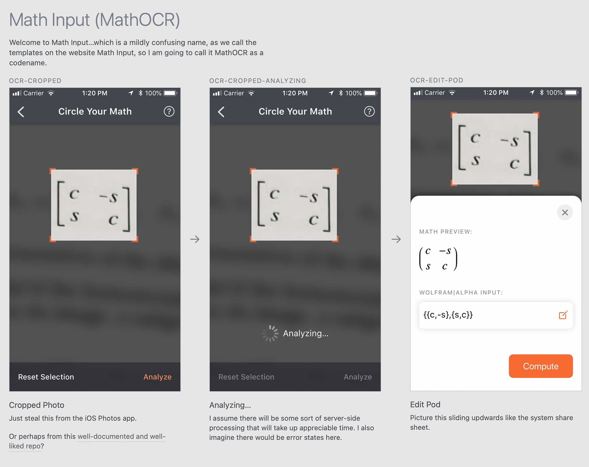
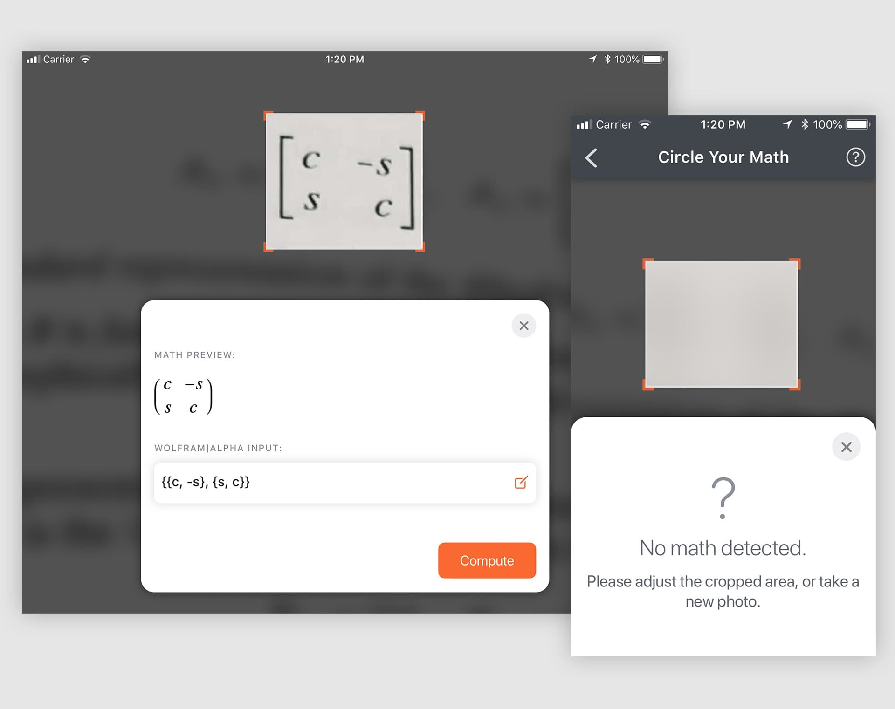
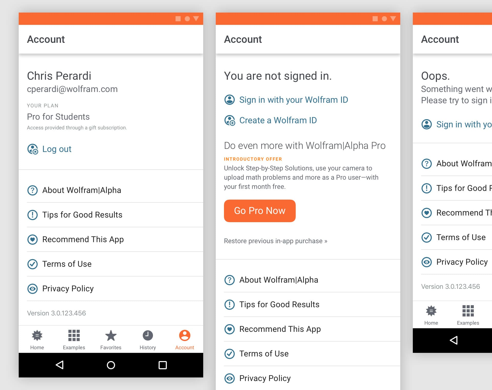

The Project
A soon-to-launch redesign of the Android and iOS apps for Wolfram|Alpha, with 3 big ideas in mind…
…a visual refresh, including some navigation changes to better surface useful features…
…moving the app from paid-up-front to subscription-based…
…and debuting new features, most notably Photo Input.

The Goals
- A UI refresh. Update the app to better reflect the web product and current platform design trends, and do some tweaks to the overall navigation for better discoverability.
- Move to subscription pricing. The Wolfram|Alpha app is still using a “traditional”, in a sense, pricing model where users pay up front, which is very much not the current monetization idiom, and hurts uptake. We want to move to a subscription model that unlocks advanced features, but offers basic calculation capabilities up front.
- New features. And on that “advanced features” note, we are debuting a Photo Input feature allows users to take photos of math problems and equations and convert them to Wolfram|Alpha inputs.


The Constraints
- Legacy codebase. On both iOS and Android, we are dealing with, well, “mature” codebases. In particular, the iOS app is a senior citizen of the app store, and though we have done significant refactoring over the years, sometimes design desires had to be tempered by the reality of some code constraints. Or at least, careful design reviews were needed as we moved to proper autolayout constraints.
- Limited UX guidance. Due to a variety of team bandwidth limitations, I was responsible for signifcant UX/UI decicions for this app, from the overall flow of the Photo Input feature to the structure of the new subscription ad view.
The Process
-
Prototyping. As with many of my projects, prototyping came into play in a lot of views and designs for these apps. Some samples and examples…
- Photo Input. I created what amounts to a full view controller to explore the design and user flow of this view. Being able to create a high-fidelity prototype for this view was so useful—stakeholders appreciate being able to see the subtleties of how the various views transition into one another, and it helps me catch a lot of fine details like touch states early in the design process.
- Responsive views. I am still perpetually dissatisfied with traditional design tools for working on responsive, scalable designs. There is limited functionality for describing how things should stretch and scale to developers, and sometimes there’s just a need to explore how certain aspects of a design, like bitmap “hero” images, should scale and behave when you are moving to very disparate viewports.
- Automated specs. Specs have always been the bane of my projects, up until now. Sketch debuted built-in web-based specs for developers as this project got rolling, and it made a huge difference. Far less painful manual documentation, and no “oh no I didn’t upload the most recent version to Zeplin” issues.